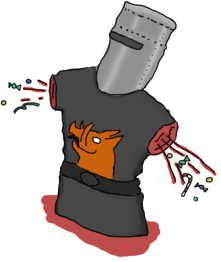

Errors and Exceptions
Not so fast!

Trong cuốn sách này bạn sẽ không thể tìm thấy một chương nào giống chương này,
xuyên suốt các chương trước đó bạn đã học cách viết một module, chương trình và chạy chung, bạn cũng học cách giải quyết vấn để với các lỗi xảy ra,
tuy nhiên điều đó là chưa đủ để kiểm soát và xử lí chúng. hơn nữa, thực tế có rất nhiều các lỗi, do đó chúng ra không thể bao quát hết được tất cả các lỗi
( kể cả trong chương này chúng ra cũng ko thể đề cập tất cả các cơ chế xử lí lỗi được).
Một điều nữa là trong Erlang có chút khác biệt về lỗi, nó gồm hai mô hinh chính sau: functional và concurrent.Trong
đó functional là một tập các thánh phần là mà chúng ta đa tìm hiểu xuyên suốt các chương trước đó của cuốn sách: referential transparency, recursion, higher order functions, etc
. concurrent là một tập cá thành phần tạo lên ưu thế cho Erlang: actors, thousands and thousands of concurrent processes, supervision trees, etc.
Lưu ý: mặc dù Erlang cho phép sử dụng một số phương pháp để kiểm soát lỗi trong functional code, nhưng như tôi đã đề cập trước đó ở chương đâu của cuốn sách Introduction. Bạn sẽ không xử lí lỗi theo cách thông thường mà phần lớn thời gian sẽ áp dụng một cơ chế xử lí lỗi khác, hay gọi là 'Let it crash'. Trong phân 'concurrent' của cuốn sách chúng ta se đi tìm hiểu về nó.
A Compilation of Errors
Trong Erlang lỗi dược chia thành nhiều loại: các lỗi khi biên dịch ( compile-time errors ), các lỗi logic ( logical errors ), lỗi xảy ra trong quá trình chạy ( run-time errors) và lỗi phát sinh (generated errors). Trong phần này tôi sẽ tập vào các lỗi biên dịch. đối với các lỗi còn lại chúng ta sẽ tìm hiểu ở các phần sau.
Lỗi biên dịch là lỗi thường xảy ra do người lập trình sai xót về mặt cú pháp: vd như việc kiểm tra, khai báo tên của một hàm, các ký tự token (dấu ngoặc vuông, dấu ngoặc vuông, dấu chấm, dấu phẩy) , đối số của một hàm (arity function), etc. Sau đây là danh sách các lỗi về biện dịch thường thấy và cách giải quyết chúng khi bạn gặp phải:
- module.beam: Module name 'madule' does not match file name 'module'
- Lỗi này cho ta biết tên của của module mà bạn định nghĩa trong
-moduletrong một file thì không khớp với tên của file. - ./module.erl:2: Warning: function some_function/0 is unused
- Lỗi này cho ta biết bạn không export hàm cần sử dụng ở bên ngoài module gốc hay sử dụng sau tên hàm hoặc sai đối số tại nơi bạn đang sử dụng hàm đó. Hoặc cũng có thể cảnh báo rằng hàm bạn viết ra thì không được sử dụng ở bất cứ đâu. vì vậy hãy kiểm tra kỹ lại code của bạn!
- ./module.erl:2: function some_function/1 undefined
- Lỗi này cho ta biết hàm này không tồn tại, có thể bạn viết sai tên hàm hay sai đối số chỉ định trong
-export. Lỗi này cũng xảy ra trong trường hợp hàm bạn định nghĩa không thể biên dịch được do sai cú pháp như quên dấu . để kết thúc hàm. - ./module.erl:5: syntax error before: 'SomeCharacterOrWord'
- Lỗi này xảy ra trong một số trương hợp như quên đóng dấu ngoặc trong danh sách, bộ ,
quên ký tự để kết thúc hay chuyển tiếp một câu lệnh ,biểu thức ( vd như quên kết thúc một biểu thức
casevới từendhay chuyển tiếp lệnh với dấu,). hay một số trường hợp đặc biệt như sử reserved atom (stop, ok, etc ) hay chuyển đổi giữa các ký tự unicode đặc biệt với nhau - ./module.erl:5: syntax error before:
- Đây là trường hợp đặc biệt của lỗi trên, mô tả của nó không thực sự rõ ràng, nó thường xảy ra khi một dòng lệnh không được kết thúc chính xác do đó hay cẩn thận kiểm tra kỹ càng.
- ./module.erl:5: Warning: this expression will fail with a 'badarith' exception
- Mặc dù mọi thứ trong Erlang là 'dynamic typing', nhưng đừng quên là types trong Erlang rất strong.
Và bộ biên dịch của Erlang rất thông minh trong việc tìm ra sai xót trong các biểu thức số học (vd như lỗi
llama + 5). Tuy vậy đối với các lỗi phức tạp hơn thì không thể . - ./module.erl:5: Warning: variable 'Var' is unused
- Lỗi này xảy ra khi bạn khai báo một biến nhưng lại không sử dụng nó.
lỗi này thương liên quan tới sai xót trong đoạn mã của bạn vid vậy hãy kiểm tra kỹ lại những gì bạn viết vả sử dụng.
Trong trường hợp , bạn cố ý sử dụng thì hãy thêm trước tên biến đó dấu gạch dưới _Var hoặc chuyển sang xài biến
_, Nó sẽ giúp bạn đọc mã tốt hơn và ko xảy ra lỗi này. - ./module.erl:5: Warning: a term is constructed, but never used
- Lỗi này xảy ra trong một hàm khi bạn đang tính làm một thứ gì đó như xây dựng một danh sách, khai báo một bộ, anonymous function mà quên không liên kết nó với một giá trị như là giá trị trả về. Cảnh báo cho bạn biết bạn có sai xót ở đâu đấy hoặc sử dụng thứ gì đó một cách lãng phí.
- ./module.erl:5: head mismatch
- Lỗi này xảy ra khi hàm của bạn có nhiều hơn một tham số đầu vào và mỗi chúng lại có một arity khác nhau. Hãy nhớ rằng cùng tên hàm nhưng khác đối số là các hàm khác nhau, trong Erlang không có overload, do đó bạn không được phép khai báo theo cách đó. nó cũng có thể xảy ra khi bạn chèn một hàm định nghĩa mới giữa hai khoản của một hàm đang đinh nghĩa ( hàm này chưa kết thúc).
- ./module.erl:5: Warning: this clause cannot match because a previous clause at line 4 always matches
- Lỗi này xảy ra khi một hàm khai báo trong một module có một mệnh đề được đinh nghĩa sau một catch-all, trình biên dịch sẽ nhìn nhận và coi nó như một lỗi để cảnh báo bạn A function defined in the module has a specific clause defined after a catch-all one. As such, the compiler can warn you that you'll never even need to go to the other branch.
- ./module.erl:9: variable 'A' unsafe in 'case' (line 5)
- Lỗi này xảy ra khi bạn đang sử dụng một biến, mà biến đó được đinh nghĩa thông qua một nhánh khớp của
case ... ofở bên ngoài. Nó là một hành vi không an toàn. Trong trường hợp bạn muốn sử dụng theo biên trong biểu thức đó , bạn lên tạo ra một biến và gán nó vơi biểu thức , bên trong biểu thưc trả về kết quả vd nhưMyVar = case ... of...
Trên là các lỗi biên dịch phổ biến hay gặp. Không có quá nhiều lỗi biện dịch cho lắm tuy nhiên thông thường chúng sẽ xảy ra theo một chuỗi các lỗi liệt kê phía trên lên việc tìm kiếm cũng khó khăn. There aren't too many and most of the time the hardest part is finding which error caused a huge cascade of errors listed against other functions. Do đó cách tốt hơn là giải quyết các lỗi biên dịch này theo thứ tự mà chúng đưa ra để tránh việc sữa những lỗi mà không thực sự xảy ra. It is better to resolve compiler errors in the order they were reported to avoid being misled by errors which may not actually be errors at all. Trong trương hợp nếu bạn gặp phải các lỗi biên dịch khác mà không có trong danh sách liệt kê phía trên, hãy gửi email cho tôi, tôi sẽ cật nhât chúng vào danh sách cùng với giải thích nó sớm.
No, YOUR logic is wrong!

Tiếp theo chúng ra sẽ nói tới một trong những lỗi khó nhất để tìm và gỡ lỗi , lỗi logic. chúng là những lỗi gây ra bởi các lập trinh viên trong quá trình code để giải quyết một vấn đề nào đó : vd như bỏ xót một số trường hợp kiểm tra điều kiện trong một số nhánh của biểu thức kiểm tra 'if' và 'case', They're most likely errors coming from the programmer: branches of conditional statements such as 'if's and 'case's that don't consider all the cases, sử dụng phép nhân thay vì phép chia gây nhâm lẫn kết quả, etc. Những lỗi này thông thường không làm crash chương trình nhưng thay vào đó nó sẽ hiển thị cho bạn những kết quả xấu không mong muốn.
Với những lỗi logic như vậy bạn có thể tự giải quyết chúng nhưng sẽ mất thời gian hơn do đo Erlang cũng cấp cho bạn rất nhiều công cụ thuânt tiện để giải quyết, bao gồm: các framework kiểm thử, TypEr và Dialyzer (bạn có thể xem lại chương types chapter), công cụ gỡ lỗi ( debugger ) và tracing module, etc. Cách tốt nhất để bảo, tránh khỏi những lỗi như vậy là kiểm thử đoạn mã của bạn. Có một điều không may là trong bất kỳ sự nghiệp của mỗi lập trình viên thì gặp những lỗi như vậy đủ để viết vài chục cuốn sách do đó tôi sẽ không danh nhiêu thời gian và đi chi tiết vào chúng nữa, thay vào đó chúng ta lên tập trung hơn về những lỗi có thể gây crash chương trình. Bởi vì những lỗi như vậy , chúng dễ dàng thấy được hơn là những lỗi về mặt logic và sẽ không bubble up tới ̀̀đ cấp độ (won't bubble up 50 levels from now). Một lưu ý nữa là với những lỗi gây ảnh hưởng tới chương trình như này có khả năng là tiền đề cho thuật ngữ 'let it crash' mà tôi đã đề cập trước đó. Note that this is pretty much the origin of the 'let it crash' ideal I mentioned a few times already.
Run-time Errors
Các lỗi trong quá trình chạy ( Run-time errors ) là một trong những lỗi rất nguy hiểm và khiến cho đọan mã của bạn bị crash. .Nhưng đùng lo lắng, Erlang có rất nhiều cách để giải quyết các lỗi như vậy và nó rât có lợi cho bạn sau này, nếu nhận thức các lỗi như vậy. Để hiểu rõ hơn tôi sẽ đưa ra một vài ví dụ thường gặp về các lỗi xảy ra trong quá trình chạy.
- function_clause
-
1> lists:sort([3,2,1]). [1,2,3] 2> lists:sort(fffffff). ** exception error: no function clause matching lists:sort(fffffff) - Với một hàm, một số lỗi xảy ra khi không có mệnh để của hàm nào khớp với mẫu đã đưa ra hoặc tât cả các mệnh đề đều không thỏa mãn.
- case_clause
-
3> case "Unexpected Value" of 3> expected_value -> ok; 3> other_expected_value -> 'also ok' 3> end. ** exception error: no case clause matching "Unexpected Value" - Lỗi này thường xảy ra khi một ai đó quên xác định điều kiện cụ thể trong biểu thức
case, hay dùng sai kiểu dư liệu hoặc không bắt tất cả các trường hợp có thể xảy ra trong biểu thứccase! - if_clause
-
4> if 2 > 4 -> ok; 4> 0 > 1 -> ok 4> end. ** exception error: no true branch found when evaluating an if expression - Lỗi này khá giống với các lỗi ở
case_clause: không có bất kỳ điều kiện nào đúng ( được khớp vớitrue). Vì vậy để chắc chắc không xảy ra, hãy bắt tất cả các trường hợp có thể xảy ra hay luôn chèn thêm điều kiệntruenhư một điều kiện mặc định nếu tât cả các điệu kiện mà bạn đưa vào đều không đúng. - badmatch
-
5> [X,Y] = {4,5}. ** exception error: no match of right hand side value {4,5} - lỗi này xảy ra khi bạn nhần lẫn trong việc so sánh khớp mẫu của 2
vế khác nhau. vd như trên khi bạn đang cố só khớp hai mẫu nhưng chúng hoàn toàn khác nhau,
hoặc trong trường hợp khi một biến đã được liên kết giá trị ròi nhưng bạn vẫn tiếp tục liên kết với giá trị khác,
hoặc giá trị của cả hai vế không khớp với nhau. Một lưu ý nữa là đôi khi người lập trình nhầm tưởng biến _MyVar và
_là tương đương nhau do đó họ dùng chúng tương đương cho cả hai vế của so sánh hoặc liên kết chúng với một giá trị khác do đó cũng có thẻ gây lên lỗi này. Hay nhớ rằng việc sử dụng ký tự gạch dưới cho một biến không có nghĩa là có thể sử dụng biến đó nhiều lần để liên kết vói giá trị khác đươc, thực tế trình biên dịch sẽ ghi nhận việc sử tên biến có ký tự gạch dưới ở phía trước vẫn là một biến bình thường nhưng thay vào đó nó sẽ phớt lờ biến đó đi nếu nó không được sử dụng thôi. - badarg
-
6> erlang:binary_to_list("heh, already a list"). ** exception error: bad argument in function binary_to_list/1 called as binary_to_list("heh, already a list") - Lỗi này tương tự như lỗi trong
function_clause, nó sẽ xảy khi không có mẫu ( điều kiện ) nào khớp với mẫu ở hàm đinh sẵn nhưng ở lỗi này nó sẽ đưa ra thông báo chi tiết hơn, việc bạn sử dụng không chính xác đối số trong một hàm định sẵn, điều khác biệt ở đây là lỗi này thường gây ra bởi lập trình viên sử dụng sai đối số truyền vào khi gọi hàm chứ không phải là các biểu thức chốt canh hay khớp mâũ củ hàm. Một lát nữa tôi sẽ cho bạn thấy cách để tạo ra lỗi này như này. - undef
-
7> lists:random([1,2,3]). ** exception error: undefined function lists:random/1 - Lỗi này xỷ ra khi hàm bạn muốn gọi không được định nghĩa. Hãy đảm bảo rằng hàm đó đã được export tử module mà nó được định nghĩa và chính xác đối số
(nếu bạn muốn sử dụng nó ở các module khác ), và kiểm tra kỹ các lỗi chính tả với tên của hàm và tên của module
. Ngoài ra bạn cũng có bắt gặp lỗi cùng với thông điệp này trong trường hợp Erlang không thể tìm thấy được đường dẫn chưa module này
. Mặc định , Erlang sẽ tìm kiếm đường dẫn ở thưc mục hiện tại.
tuy nhiên bạn có thể thêm các đường dẫn khác bằng việc sử dụng
code:add_patha/1haycode:add_pathz/1. Trong trường hợp nó không hoạt động, hãy kiểm tra xem module đó đã được biên dịch hay chưa! - badarith
-
8> 5 + llama. ** exception error: bad argument in an arithmetic expression in operator +/2 called as 5 + llama - Lỗi này xảy ra khi bạn đang cố thực hiện một phép số học trái quy tắc , vd như chia một số cho 0 hay thực hiện phép tihs giữa kiểu dữ liệu số và kiểu dữ liệu atom.
- badfun
-
9> hhfuns:add(one,two). ** exception error: bad function one in function hhfuns:add/2 - Lỗi này xảy ra khi bạn cố sử dụng một biến như một hàm, nhưng giá trị của biến đó không phải là hàm.
nhu trong ví dụ tôi sử dụng hàm
hhfunstừ chương higher-order-functions và sử dụng hai atom như các hàm, do đó lỗibadfunđược ném ra. - badarity
-
10> F = fun(_) -> ok end. #Fun<erl_eval.6.13229925> 11> F(a,b). ** exception error: interpreted function with arity 1 called with two arguments - lỗi
badaritylà một trường hợp đặc biệt riêng của lỗibadfun: nó xảy ra khi bạn sử dụng higher order functions, nhưng đối số mà vào ít hơn hay nhiều hơn giá đối số được phép. - system_limit
- lỗi
system_limitxảy ra do rất nhiều nguyên nhân: có quá nhiều tiến trình ( chúng ta xem tim hiểu sau ) , sử dụng các atom cùng tên quá dài, sử dụng quá nhiều đối số trong một hàm, số lượng atom sử dụng quá nhiều , quá nhiều nút kết nối với nhau, etc. để tìm hiểu chi tiết về các lỗi này, bạn có thể xem tại Erlang Efficiency Guide mụcsystem limits. Một điều lưu ý nữa là một số lỗi có thể gây crash toàn bộ máy ảo.
Raising Exceptions
để giám sát việc thực hiện của các đoạn mã và bảo vệ khỏi các lỗi logic, một ý kiến được đưa để phát hiện các vẫn đề, lỗi sớm là việc tạo ra, gây ra một số lỗi crash trong quá trình chạy.
có tất cả ba loại ngoại lệ trong Erlang: đó là errors, throws và exits. Mỗi chúng sẽ có cách sử dụng khác nhau và ta sẽ đi vào chi tiết từng ngoại lệ cụ thê:
Errors
Đây là ngoại lệ chúng ta sẽ tìm hiểu đầu tiên, băng cách gọi hàm erlang:error(Reason) , tại thời điểm gọi, nó sẽ chấm dứt tiến trình hiện tại , tiếp đó nó sẽ cung cấp cho bạn
dò ngăn xếp ( stack trace , hãy hiểu đơn giản nó là một tập các thông tin về hàm, biểu thức, câu lệnh được lưu trữ tuần tự trong ngắn xếp
và bạn có thể dễ dang do tìm, truy được thông tin lỗi dựa trên chúng) cùng với hàm gần nhất mà được gọi cùng với đối số của hàm đó.
will end the execution in the current process and include a stack trace of
the last functions called with their arguments when you catch it.
Đây là một trong những ngoại lệ gây ra trong quá trình chạy mà tôi đã cập ở trên..
Errors are the means for a function to stop its execution when you can't expect the calling code to handle what just happened.
Giả sử như bạn nhạn được môt lỗi if_clause, Bạn sẽ làm gì với nó ? Sửa đoạn mã đó và biên dịch lại,
Đó là tất cả những gì bạn có thể làm được ( tốt hơn việc chỉ hiện thị một thông báo lỗi ).
Hay một vd về viêc sử dụng trường hơp mặc định đẻ tránh không tạo ra lỗi như trong module tree mà chúng ta đã làm trong
more-than-lists.
Việc thực hiện tìm kiếm node, từ khóa xác định trong một cây không phải lúc nào cũng tìm được,
để tránh việc không tìm được gây ra lỗi, chúng ta sẽ tạo ra một trường hợp mặc đinh đôi với các kết quả mà không
biết được: như việc sử dụng một giá trị mặc định, kiểm tra điều kiện để chèn một giá trị mới vào, xóa bỏ cây, etc.
Tốt hơn là kết quả trả về một cấu trúc bộ có dạng {ok, Value} đối với một kết quả có giá trị và một atom undefined
với các trương hợp không có giá trị hoặc không tìm được thay vì trả về lỗi.
{ok, Value}
or an atom like undefined rather than raising errors.
Tuy vậy các lỗi thì không bị giới hạn phạm vi như các ví dụ trên, Bạn cũng có thể định nghĩa các lỗi của chính bạn như vd sau:
1> erlang:error(badarith). ** exception error: bad argument in an arithmetic expression 2> erlang:error(custom_error). ** exception error: custom_error
Nhìn xem, bạn thấy lỗi custom_error thì không được ghi nhận bởi Erlang đông thời cũng không có thông điệp kèm theo như "bad argument in ...",
Nhưng nó được sử dụng theo cùng một cách và xử lí tương tự như các lỗi khác ( ở phần sau, chúng ta sẽ thấy làm điều đó như nào).
Exits
Trong Erlang, có hai loại exits cần phải phân biệt rõ: 'internal' exits và 'external' exits.
Internal exits được gọi ra bằng cách gọi hàm exit/1, sau khi gọi nó sẽ ngững ngay tiến trình hiện tại.
External exits được gọi ra bằng cách gọi hàm exit/2 và được sử dụng khi bạn làm việc cùng đa tiến trình trong concurrent aspect of Erlang;
Trong chương này chúng ta sẽ tập trung phần lớn vào internal exits và nói sơ qua external exits sau đó.
Internal exits gần giống với lỗi (errors).
thực tế trong các bài phát biểu, chúng thường được tạo ra bởi cùng một cách gọi exit/1 và sư dụng trong cùng trường hợp.
Thật sự mơ hồ, vậy làm thế nào để xác đinh giữa chúng ? Để hiểu, phân biệt được khi nào sử dụng cái nào,
chúng ta phải đi xét khai niệm của tiến trình ( process ) và actor.
Như trong chương đầu, Tôi nói về tiến trình và đã ví von các tiến trình với những người giao tiếp qua lại qua mail , do đó tương tự chúng ta sẽ không đề cập nhiều hơn nữa mà sẽ minh họa chúng thông qua các biểu đồ bong bóng sau. . There's not a lot to add to the analogy, so I'll go to diagrams and bubbles.

Như trong hình bạn sẽ thấy các tiến trình ( process ) sẽ gửi các thông điệp ( message ) cho nhau. một tiến trình cũng có thể lắng nghe , đợi một thông điệp mới tới. đồng thời bạn cũng có thể lưa chọn lắng nghe hay loại bỏ, bỏ qua hay chấm dứt việc lắng nghe sau một khoảng thời gian nhất định, etc.

Từ các khai niệm cơ bản trên cho phép nhưng người phát triển của Erlang có thể sử dụng các loại thông điệp đặc biệt cho việc giao tiếp ngoại lệ giữa các tiến trình với nhau, hay có thể coi chúng như 'last breath' của một tiến trình. Chúng sẽ được gửi tới trước khi tiến trình tạch và chứa các đoạn mã để dừng việc thực thi. Hay một số các trình khác trình đang lắng nghe , đợi một số loại thông điệp cụ thể có thể biết được các sự kiện và thực hiện một điều gì đó bởi các thông điệp đặc biệt này. thông thường nó gồm có logging và phục hồi trạng thái của tiến trình mà đã die trước đó, etc.
These basic concepts let the implementors of Erlang use a special kind of message to communicate exceptions between processes. They act a bit like a process' last breath; they're sent right before a process dies and the code it contains stops executing. Other processes that were listening for that specific kind of message can then know about the event and do whatever they please with it. This includes logging, restarting the process that died, etc.
Bằng cách giải thích trên, ta có thấy thấy rõ sự khác nhau khi sử dụng giữa erlang:error/1 và exit/1.
Mặc dù cả hai được sử dụng theo cách giống nhau , nhưng sự khác biệt thực sự đến từ mục đích mà muốn sử dụng chúng.
Khi nhận môi lỗi như vậy bạn có thể quyét định giũa việc coi nó là một lỗi 'đơn giản' hay là một điều kiện để chấm dứt tiến trình hiện tại đi.
Một sự lưu ý là hàm erlang:error/1 sẽ trả vê một stack trace , ngược lại hàm exit/1 thì không.
Trong trường hợp nếu bạn có một lượng lớn stack trace hoặc một hàm với rất nhiều đối số ,
nếu hàm exit/1 thực hiện việc sao chép thông điệp tới các tiến trình đang lắng nghe, đợi thông điệp đó, và nếu nó trả về stack trace hoặc thông tin dữ liệu của các đối số trong hàm
tức là nó sẽ phải sao chép toàn bộ các dữ liệu đó vào các thông điệp và gửi đi, thông thuòng nó sẽ ko có gì lạ nếu bạn có đủ tài nguyên và điệu kiện lí tưởng nhưng ngược điều đó sẽ cự kỳ tồi tệ.
While both can be used in an extremely similar manner, the real difference is in the intent.
You can then decide whether what you've got is 'simply' an error or a condition worthy of killing the current process.
This point is made stronger by the fact that erlang:error/1 returns a stack trace and exit/1 doesn't.
If you were to have a pretty large stack trace or lots of arguments to the current function,
copying the exit message to every listening process would mean copying the data. In some cases, this could become unpractical.
Throws
một throw là một lớp của ngoại lệ và được sử dụng để tạo ra các ngoại lệ mong muốn để người lập trình có thể dễ dàng xử lí hơn. So sánh với exits và errors, throw không mang bât kỳ ý định nào với việc 'crash that process!', thay vào đó nó mang lại cho lập trình viên có thể dễ dàng quản lí luồng logic của chương trình. Vd như việc bạn dùng throw với ý định để lập trình viên tin tưởng, biết cách để xử lí chúng. is a class of exceptions used for cases that the programmer can be expected to handle. In comparison with exits and errors, they don't really carry any 'crash that process!' intent behind them, but rather control flow. As you use throws while expecting the programmer to handle them, it's usually a good idea to document their use within a module using them.
Cú pháp của ngoại lệ throw được viết như sau:
1> throw(permission_denied). ** exception throw: permission_denied
bạn có thể thay thế từ permission_denied bằng bất kỳ từ nào bạn muốn( bao gồm cả cụm từ như 'everything is fine',
nhưng thông thường nó không giúp ích được gì nhiều mà chỉ khiến người đoc cảm thây rối hơn).
Throws cũng có thể được sử dụng đối với trả về một hàm không cục bộ ( non-local , đây là thuật ngữ sủ dụng đối với việc kết quả trả về nằm ở một hàm khác thay vì
tại hàm đang gọi, vd thông thường bạn tạo ra một hàm vè trả về kêt quả 'return' cuồi hay một phần của hàm, nhưng trong trường hợp bạn sử dụng một kết quả từ một
anonymous function, hay một hàm khác nằm ngoài hàm đang sử dụng, khi đó giá trị trả về dược gọi là non-local ) trong một phép đệ quy sâu.
ví dự như trong module ssl
sử dụng hàm throw/1 để trả về một bộ có dạng {error, Reason}.
nhờ cách làm này người phát triển chỉ cần quan tâm tới việc viết các trường hợp đúng và có một hàm để tương tác, xư lí cùng các ngoại lệ
module which uses throw/1 as a way to push {error, Reason} tuples back to a top-level function.
This function then simply returns that tuple to the user.
This lets the implementer only write for the successful cases and have one function deal with the exceptions on top of it all.
Một ví dụ nữa trong việc sử dụng module array, giả sử bạn có một hàm tìm kiếm một phần tử trong danh sách,
hàm này trả về kết quả mặc định do người dùng cung câp nếu như không thể tìm kiếm
được. Do đó khi tới cuối danh sách , mà không thể tìm được phần tử thỏa mãn, giá trị mặc định sẽ được ném ra như một ngoại lệ.
và top-level function sẽ xử lí chúng, sau đó thay thế bằng giá trị mặc định do người dùng cung cấp.
Việc làm này giúp cho người lập trình không cần phải truyền vào giá trị mặc định như một tham số ở mỗi hàm thay vào đó họ chỉ cần quan tới tới việ xứ lí logic trong hàm và
quan tâm tới các trường hợp dúng thôi.
where there is a lookup function that can return a user-supplied default value if it can't find the element needed.
When the element can't be found, the value default is thrown as an exception,
and the top-level function handles that and substitutes it with the user-supplied default value.
This keeps the programmer of the module from needing to pass the default value as a parameter of every function of the lookup algorithm, again focusing only on the successful cases.

Như một quy tắc chung, hãy thử hạn chế việc sử dụng throw đối với non-local trong một module để dễ dàng hơn cho việc gỡ lỗi As a rule of thumb, try to limit the use of your throws for non-local returns to a single module in order to make it easier to debug your code. Đồng thời nó còn giúp bạn thay đổi nôi dung của module mà không yêu cầu bạn phải thay đổi các thành phần giao tiếp ( interface ) của nó It will also let you change the innards of your module without requiring changes in its interface.
Dealing with Exceptions
Như tôi đã đề cập trước đó, trogn chương này chúng ta sẽ tìm hiểu về việc xứ lí với các ngoại lệ throws, errors và exits.
Giống với một số ngôn ngữ khác Erlang cũng hỗ trợ biểu thức try ... catch.
Tôi sẽ giaỉ thích về biểu thức try ... catch, thông thường khi bạn thao tác với một biểu thức, câu lệnh nó
sẽ một là thực hiện thành công , trường hợp còn lại sai và xuất hiện lỗi, bằng việc dùng try ... catch, nó sẽ ước định biểu thức đó
và xét, nếu biểu thức đó là sai thì nó sẽ bắt và xử lí lỗi , ngược lại nếu đúng thì biểu thức nó hoạt động như một biểu thức thông thường. Dưới đây là cú pháp chung:
try Expression of
SuccessfulPattern1 [Guards] ->
Expression1;
SuccessfulPattern2 [Guards] ->
Expression2
catch
TypeOfError:ExceptionPattern1 ->
Expression3;
TypeOfError:ExceptionPattern2 ->
Expression4
end.
Như bạn thấy biểu thức ( Expression ) được bao bọc giữa try và of như một vòng bao vệ protected.
Điều này có nghĩa là bất kỳ lỗi ngoại lệ nào xảy ra sẽ được băt
this means that any kind of exception happening within that call will be caught.
tương tự các mẫu biểu thức giữa try ... of và catch có hành vi giống với
hành vi trong case ... of. thành phần catch có thể thay thế bằng TypeOfError
cho cả error, throw hay exit chõ từng kiểu ngoại lệ tương ứng mà chúng ta đã thấy trong chương này.
nếu khống có ngoại lệ được chỉ định, thì mặc định throw sẽ được sử dụng. Nao giờ chúng ta sẽ luyện tập với chúng.
error, throw
or exit, for each respective type we've seen in this chapter. If no type is provided,
a throw is assumed. So let's put this in practice.
Việc dầu tiên , hãy tạo ra một module mới và đặt tên nó là exceptions.
Tiếp đó hãy gõ đoạn mã sau:
-module(exceptions).
-compile(export_all).
throws(F) ->
try F() of
_ -> ok
catch
Throw -> {throw, caught, Throw}
end.
Giờ hay lưu lại và biện dịch file module mà chúng ta vừa tạo và chạy shell:
1> c(exceptions).
{ok,exceptions}
2> exceptions:throws(fun() -> throw(thrown) end).
{throw,caught,thrown}
3> exceptions:throws(fun() -> erlang:error(pang) end).
** exception error: pang
Như bạn thấy, biẻu thức try ... catch sẽ sử dụng throws.
Như đã nói lúc trước, nếu không có bất kỳ ngoại lệ nào xác đinh thì throws sẽ được sử dụng.
Tiếp đó chúng ta sẽ viết các hàm khác cùng với try ... catch cho các kiểu ngoại lệ còn lại:
errors(F) ->
try F() of
_ -> ok
catch
error:Error -> {error, caught, Error}
end.
exits(F) ->
try F() of
_ -> ok
catch
exit:Exit -> {exit, caught, Exit}
end.
And to try them:
4> c(exceptions).
{ok,exceptions}
5> exceptions:errors(fun() -> erlang:error("Die!") end).
{error,caught,"Die!"}
6> exceptions:exits(fun() -> exit(goodbye) end).
{exit,caught,goodbye}
tiếp theo chúng ta sẽ viêt một ví dụ để hiển thị hết tất cả các ngoại lệ trên bằng duy nhất một biểu thức try ... catch.
đầu tiên chúng ta sẽ viết các hàm để sinh ra các ngoại lệ đó trước đã:
sword(1) -> throw(slice);
sword(2) -> erlang:error(cut_arm);
sword(3) -> exit(cut_leg);
sword(4) -> throw(punch);
sword(5) -> exit(cross_bridge).
black_knight(Attack) when is_function(Attack, 0) ->
try Attack() of
_ -> "None shall pass."
catch
throw:slice -> "It is but a scratch.";
error:cut_arm -> "I've had worse.";
exit:cut_leg -> "Come on you pansy!";
_:_ -> "Just a flesh wound."
end.
Ở đây hàm is_function/2 là một BIF dùng để kiểm tra biến Attack có phải là một hàm mà không chứa bất kỳ tham số đầu vào nào không.
tiếp đó chúng ta thêm:
talk() -> "blah blah".
giờ hãy biên dịch module và mở shell lên để kiểm tra, bạn sẽ thấy có sự khác biệt:
7> c(exceptions).
{ok,exceptions}
8> exceptions:talk().
"blah blah"
9> exceptions:black_knight(fun exceptions:talk/0).
"None shall pass."
10> exceptions:black_knight(fun() -> exceptions:sword(1) end).
"It is but a scratch."
11> exceptions:black_knight(fun() -> exceptions:sword(2) end).
"I've had worse."
12> exceptions:black_knight(fun() -> exceptions:sword(3) end).
"Come on you pansy!"
13> exceptions:black_knight(fun() -> exceptions:sword(4) end).
"Just a flesh wound."
14> exceptions:black_knight(fun() -> exceptions:sword(5) end).
"Just a flesh wound."

Ở biểu thứ sô ̣9, đây là trạng thái hoàn toàn bình thường của hàm 'black knight', do đó không có điều gì lạ cả, và hàm hoạt động một cách bình thường
. các dòng tiếp sau đó sẽ là những gì xảy ra khi có một ngoại lệ, bạn sẽ thấy việc sử dụng khớp mẫu để khớp với
các ngoại lệ dựa trên các lớp ngoại lệ mà chúng ta đã nhắc đén trong chương này (throw, error, exit), đi kèm với chúng sau dấu :
là nguyên nhân , thường đi kèm của ngoại lệ đó (slice, cut_arm, cut_leg).
slice, cut_arm, cut_leg).
Cuối cùng ở biểu thức dòng 13, 14 là trường hợp mặc định của ngoại lệ sử dụng mệnh đề catch-all, nếu như tất cả các trường hợp định nghĩa đều không được khớp
. Đoạn mẫu _:_ chỉ ra việc bất kể ngoại lệ đưa vào là thế nào nó cũng đêù bắt.
Trong luyện tập bạn lên thận trọng trong việc sử dụng các mẫu catch-all: để đảm bảo được bạn có thể xử lí được đoạn mã của bạn
One thing shown here on expressions 13 and 14 is a catch-all clause for exceptions. The _:_ pattern
is what you need to use to make sure to catch any exception of any type.
In practice, you should be careful when using the catch-all patterns: try to protect your code from what you can handle,
but not any more than that. Erlang has other facilities in place to take care of the rest.
Bạn cũng có thể thêm một mệnh đề 'after' bổ sung nữa ngay sau đoạn try ... catch , và nó luôn gọi trong tất cả các trường hợp.
Cách làm này tương tự như 'finally' trong các ngôn ngữ khác:
try Expr of
Pattern -> Expr1
catch
Type:Exception -> Expr2
after % this always gets executed
Expr3
end
Bất kể là trường hợp có lỗi hay không thì biểu thức bên trong after vẫn luôn được thực hiện.
Nhưng hay nhớ là biểu thức trong after sẽ không có giá trị trả về. Do đó
thông thường nó được sử dụng để thực hiện các đoạn mã cùng side effects.
Ví dụ phổ biến thường xử dụng là khi bạn đang đoc một file và bất kể trong trường hợp nào sau khi biểu thức try ... catch
kết thúc file sẽ luôn đươc đóng lại.
No matter if there are errors or not, the expressions inside the after part are guaranteed to run.
However, you can not get any return value out of the after construct.
Therefore, after is mostly used to run code with side effects.
The canonical use of this is when you want to make sure a file you were reading gets closed whether exceptions are raised or not.
Giơ chúng ta đã biết làm thế nào để thao tác xử lí với 3 lơp ngoại lệ trong Erlang cùng với
catch block rồi. Tuy nhiên có một điều tôi đã không nói với bạn:
thực tế là bạn có thể đặt nhiều biểu thức giữa try và of thay vì chỉ một biểu thức như trong công thức mà tôi đã cho bạn xem trước đó.
whoa() ->
try
talk(),
_Knight = "None shall Pass!",
_Doubles = [N*2 || N <- lists:seq(1,100)],
throw(up),
_WillReturnThis = tequila
of
tequila -> "hey this worked!"
catch
Exception:Reason -> {caught, Exception, Reason}
end.
Hãy xét đoạn mã trên, với việc gọi hàm exceptions:whoa(), chúng ta chắc chắn sẽ nhận được kết quả là {caught, throw, up},
rõ rang trong biểu thức bạn thấy hàm throw(up) sẽ được gọi và sinh ra một ngoại lệ, sau đó nó sẽ được bắt trong mệnh đề catch của biểu thức.
Như ví dụ bạn tháy chúng ta có thể có rất nhiều biểu thức giữa try và of và ngăn cách các biểu thức với nhau bởi dấu phẩy ,
Có thể bạn không chú ý điều tôi muốn nhấn mạnh tới trong hàm exceptions:whoa/0. hãy để ý là khi chúng ta sử dụng nhiều biểu thưc giữa
try và of, kết quả trae về không phải lúc nào cũng quan trọng, hãy để ý việc tạo ra throw, khiến cho kêt qủa trong
of trở lên vô nghĩa. Tuyệt! Có một tin tốt là nếu gặp trường hợp như vậy bạn có thể bỏ luôn mệnh đề of đi:
im_impressed() ->
try
talk(),
_Knight = "None shall Pass!",
_Doubles = [N*2 || N <- lists:seq(1,100)],
throw(up),
_WillReturnThis = tequila
catch
Exception:Reason -> {caught, Exception, Reason}
end.
Giờ trông nó thật gọn gàng hơn!
Lưu ý : không lên sử dụng đệ quy đuôi trong các thành phần bảo về của ngoại lệ , vì máy ảo sẽ luôn giữ một tham chiếu tới nó trong trường hopwj một ngoại lệ xảy ra. It is important to know that the protected part of an exception can't be tail recursive. The VM must always keep a reference there in case there's an exception popping up.
Cấu trúc try ... catch mà không cùng với of part has nothing but a protected part,
một lời gọi đệ quy từ trong cấu trúc này thực sự nguy hiểm và gây treo chương trình.
tài nguyên bộ nhớ sẽ đầy hay chương trình của bạn sẽ ngày càng chậm hơn sau một lượng lặp nhât định trong đệ quy, vì vậy
hãy đăt
calling a recursive function from there might be dangerous for programs supposed to run for a long time (which is Erlang's niche).
After enough iterations, you'll go out of memory or your program will get slower without really knowing why.
By putting your recursive calls between the of and catch,
you are not in a protected part and you will benefit from Last Call Optimisation.
Một vài người thích sử dụng cấu trúc mặc định try ... of ... catch hơn là cấu trúc try ... catch
để tránh một số lỗi không mong muốn xảy ra,
ngoại trừ việc cẩn thận hơn trong các trường hợp đê quy ra thì gần như ta thấy rằng việc sử dụng cấu trúc mặc định rõ ràng dài hơn và không đem lại nhiều ý nghĩa gì
khác, kết quả vẫn tương tự cấu trúc rút gọn, tuy nhiên tôi sẽ không đề cập gì thêm, việc lựa chọn giữa hai cấu trúc trên tùy theo quyết định của bạn!
Wait, there's more!
Nếu như bạn cảm thấy rằng việc xử lí lỗi trong Erlang chưa bằng so với các ngôn ngữ khác thì đừng lo,
bởi bị chúng ta vẫn chưa tìm hiểu hết, ngoài cách xử lí lỗi ở phần trước ra, Erlang vân còn một cấu trúc xử lí lỗi khác.
Nó xác định bằng từ khóa catch, về cơ bản nó sẽ bắt tất cả lỗi ngoại lệ xảy ra trên đầu của kết quả đúng.
Có vẻ như hơi khó hiểu và khác ngoại lệ trước đó mà ta đã làm, vì vậy hãy xem các ví dụ sau đây để hiểu hơn.
As if it wasn't enough to be on par with most languages already, Erlang's got yet another error handling structure.
That structure is defined as the keyword catch and basically captures all types of exceptions on top of the good results.
It's a bit of a weird one because it displays a different representation of exceptions:
1> catch throw(whoa).
whoa
2> catch exit(die).
{'EXIT',die}
3> catch 1/0.
{'EXIT',{badarith,[{erlang,'/',[1,0]},
{erl_eval,do_apply,5},
{erl_eval,expr,5},
{shell,exprs,6},
{shell,eval_exprs,6},
{shell,eval_loop,3}]}}
4> catch 2+2.
4
Chúng ta có thể thấy rằng kết quả của throw vãn giống như kết quả trong try...catch trước đó, tuy nhiên
với cái dòng tiếp theo chúng ta đã thấy sự khác biệt đối với các ngoại lệ exits và errors, cả hai đều hiển thị cấu trúc dạng {'EXIT', Reason}.
Lí giải của việc này là do errors được viết sau exits (do đó nhũng người tạo ra chúng muốn giữ kết quả như vậy như một sự tương thích ngược
giữa chúng).
sau đây là cách đọc stack trace:
5> catch doesnt:exist(a,4).
{'EXIT',{undef,[{doesnt,exist,[a,4]},
{erl_eval,do_apply,5},
{erl_eval,expr,5},
{shell,exprs,6},
{shell,eval_exprs,6},
{shell,eval_loop,3}]}}
- lỗi
undef, là là lỗi mà hàm bạn muốn gọi không được định nghĩa which means the function you called is not defined (see the list at the beginning of this chapter) - lỗi tiếp sau phía bên phải của bộ là một tập các stack trace
- bô đầu tiên nằm ở phàn tử đầu tiên của danh sách stack trace chỉ ra hàm cuối cùng được gọi (
{Module, Function, Arguments}). đó chính là nơi xảu ra lỗi hay chính xác tại hàm mà bạn muốn gọi nhưng không đinh nghĩa. - các phần tử bộ tiếp sau trong danh sách là những hàm được gọi trước khi lỗi xảy ra.
Và chúng luôn có dạng
{Module, Function, Arity}. - Nói chúng đó là tất cả những gì chúng ta cần biết.
Trong trường hợp bạn muốn chủ động, bạn có thể hiển thị stack trace bằng cách gọi hàm erlang:get_stacktrace/0 tại tiến trình mà bị crash.
Thông thường bạn sẽ thấy cấu trúc catch được viết như sau (chúng ta vẫn dang xét tại exceptions.erl):
catcher(X,Y) ->
case catch X/Y of
{'EXIT', {badarith,_}} -> "uh oh";
N -> N
end.
Hãy biên dịch và mở shell lên kiếm tra, để nhận những gì chúng ra chờ đợi:
6> c(exceptions).
{ok,exceptions}
7> exceptions:catcher(3,3).
1.0
8> exceptions:catcher(6,3).
2.0
9> exceptions:catcher(6,0).
"uh oh"
Nhìn chung , chúng ta có thể thấy cách viết để xử lí ngoại lệ này thật ngăn gọn và dễ dàng, nhưng dừng vội,
thật sự có một vài vấn đè khi sử dụng cùng với cấu trúc catch. Đầu tiên chúng ta xét thú tự ưu tiên thưc hiện trong một câu lệnh xem:
10> X = catch 4+2. * 1: syntax error before: 'catch' 10> X = (catch 4+2). 6
Trong hầu hết các trường hợp từ đâu cuốn sách tới giờ , bạn không cần phải sử dụng cặp ngoặc tròn để phân biệt độ ưu tiên của một hành động, nhưng
trong trường hopwj này bạn có thể thấy nếu không sử dụng cặp ngoặc tròn để bọc lấy biểu thức của catch, thì lỗi sẽ xảy ra.
Ngoài ra còn một vấn đề nữa là khi sử dụng catch, bạn sẽ không thể phân biệt giữa đâu là ngoại lệ:
That's not exactly intuitive given that most expressions do not need to be wrapped in parentheses this way.
Another problem with catch is that you can't see the difference between what looks like the underlying representation of an exception and a real exception:
11> catch erlang:boat().
{'EXIT',{undef,[{erlang,boat,[]},
{erl_eval,do_apply,5},
{erl_eval,expr,5},
{shell,exprs,6},
{shell,eval_exprs,6},
{shell,eval_loop,3}]}}
12> catch exit({undef, [{erlang,boat,[]}, {erl_eval,do_apply,5}, {erl_eval,expr,5}, {shell,exprs,6}, {shell,eval_exprs,6}, {shell,eval_loop,3}]}).
{'EXIT',{undef,[{erlang,boat,[]},
{erl_eval,do_apply,5},
{erl_eval,expr,5},
{shell,exprs,6},
{shell,eval_exprs,6},
{shell,eval_loop,3}]}}
Nhìn xem, với ví dụ này bạn thực sự không biết được đâu là ngoại lệ với errors hay đâu là ngoại lệ exit.
hay một cách khác là bạn có thể sử dụng throw/1 dể tạo ra ngoại lệ ở vd trên.
nhưng hay cẩn thận, việc dùng throw/1 với catch cũng có một số vấn đè:
one_or_two(1) -> return; one_or_two(2) -> throw(return).
Và hãy nhìn xem vấn đề ở đây:
13> c(exceptions).
{ok,exceptions}
14> catch exceptions:one_or_two(1).
return
15> catch exceptions:one_or_two(2).
return
Giaỉ thích cho kết quả trên là vì sau catch, chúng ta không thể biết được chính xác hàm sẽ ném ra ngoại lệ hoặc nếu nó trả lại một giá trị!
Mặc dù lỗi trên chúng ta ít bắt gặp trong toàn bộ quá trình luyện tập nhưng bởi vì nó là một lỗi tiềm ẩn, và có thẻ xảy ra do đó
những người tạo ra Erlang đã thêm cấu trúc try ... catch trong phiên bản R10B vào để đảm bảo tính an toàn.
we can never know if the function threw an exception or if it returned an actual value!
This might not really happen a whole lot in practice,
but it's still a wart big enough to have warranted the addition of the try ... catch construct in the R10B release.
Try a try in a tree
để luyện tập củng cố kiến thức với ngoại lệ và thành thạo hơn, tiếp chúng ta sẽ quay trở lại module tree chương trước và
làm một ví dụ nhỏ. Như trong vd tree trước đây chúng ta đã làm, chúng ta mới chỉ giải quyết vấn đề logic đúng thôi còn với những vấn đề liên quan tới lỗi chúng ta chưa
xứ lí gì hết cả, do đó lân này chúng ta sẽ bổ sung thêm một hàm cho một hàm tìm kiếm để tìm một giá trị có tồn tại hay không trong cây.
Vì quy ước của chúng ta là làm việc với cây nhị phân do đó thứ tự của các từ khóa trong cây chúng ta sẽ bỏ qua ( vì bản chát cây nhị phân đã phải tuân theo quy tắc thứ tự rồi), do đó
điều quan trọng ở dây là việc duyệt cậy cho tới khi chúng ta tìm được giá trị cần tìm.
Cách duyệt cây tương tự như những gì chúng ta đã làm trước đó với hàm tree:lookup/2,
ngoài trừ trong lần này chúng ta sẽ bổ sung thêm việc kiểm tra cả hai nhánh con ( nhánh trái , nhánh phải) theo thứ tự từ trên xuống.
Trước khi bắt đầu vào viết hàm này, bạn có thể xem lại chương trước để nhớ lại về cấu trúc cây mà chúng ta định nghĩa (một node cậy sẽ có dạng
{node, {Key, Value, NodeLeft, NodeRight}} hoặc với node rỗng {node, 'nil'}).
Trước tiên chúng ta sẽ thực hiện tương tự hàm tree:lookup/2 cùng với bỏ qua việc xử lí ngoại lệ:
%% looks for a given value 'Val' in the tree.
has_value(_, {node, 'nil'}) ->
false;
has_value(Val, {node, {_, Val, _, _}}) ->
true;
has_value(Val, {node, {_, _, Left, Right}}) ->
case has_value(Val, Left) of
true -> true;
false -> has_value(Val, Right)
end.
Nào hãy nhìn nhận ván đề ở đoạn mã này đó là việc mỗi node phân nhánh , chúng ta luôn phải kiêm tra kêt quả trả về của nhánh trước đó:

Điều này thật sự phiền liễu, mất thời gian. Do đó chúng ta có thể sử dụng ngoại lệ thrơw để giảm bớt việc làm này This is a bit annoying. With the help of throws, we can make something that will require less comparisons:
has_value(Val, Tree) ->
try has_value1(Val, Tree) of
false -> false
catch
true -> true
end.
has_value1(_, {node, 'nil'}) ->
false;
has_value1(Val, {node, {_, Val, _, _}}) ->
throw(true);
has_value1(Val, {node, {_, _, Left, Right}}) ->
has_value1(Val, Left),
has_value1(Val, Right).
Đó bạn nhìn xem, bằng cách làm này chúng ta vẫn đạt được ý định như lúc trước mà không phải kiểm tra
kết quả trả về nữa. trong phiên bản này, chúng ta sẽ sử dụng throw đói với giá trị được tìm thấy và
quá trình kiểm tra đánh giá cây sẽ dừng lại và đi tới mệnh đề catch.
Ngược lại, quá trình duyệt và kiểm tra vẫn được tiép tục cho tới khi không còn node nào để kiểm tra nữa và nó sẽ trả về gia trị samp>false.
The execution of the code above is similar to the previous version, except that we never need to check for the return value: we don't care about it at all.
In this version, only a throw means the value was found.
When this happens, the tree evaluation stops and it falls back to the catch on top.
Otherwise, the execution keeps going until the last false is returned and that's what the user sees:

Một điều dễ thấy đó là đoạn mã mà chúng ta viết khi thêm ngoại lệ vào thực sự dài hơn so với đoạn ma trước đó. tuy nhiên hãy xét tổng thể , việc làm này có thể nhận được một sô lợi ích như tốc độ chương trình cải thiện nhờ vào việc sử dụng non-local cùng với throw, nhưng hiệu suât của nó cũng phụ thuộc vào các hoạt động mà bạn thao tác thực hiện nữa. Đây chỉ là một ví dụ đơn giản giúp bạn có thể hiểu hơn và thành thạo hơn khi phải làm việc thao tác với các cấu trúc dữ liệu phức tạp chứ nó không phải là một quy tắc, quy ước nào cả. Of course, the implementation above is longer than the previous one. However, it is possible to realize gains in speed and in clarity by using non-local returns with a throw, depending on the operations you're doing. The current example is a simple comparison and there's not much to see, but the practice still makes sense with more complex data structures and operations.
That being said, we're probably ready to solve real problems in sequential Erlang.